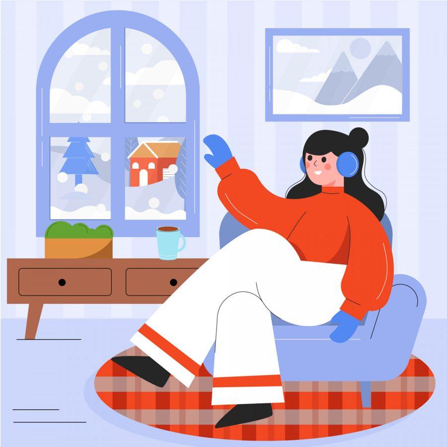

Есть ощущение, что в ночь с 31 декабря на 1 января в воздухе что-то щёлкает. Как будто Вселенная перелистывает страницу, и вместе с этим в голове просыпается строгий, требовательный голос. Он начинает диктовать список: обнови гардероб, начни бегать по утрам, выучи язык, наконец-то займись тем проектом. Этот голос говорит: «Становись лучше. Теперь ты должна быть другой - собранной, мотивированной, новой». И если внутри нет ответного энтузиазма, а есть лишь усталость от самого ожидания этого энтузиазма, накрывает чувство вины. Словно ты уже в первый день нового года опоздала на свой собственный старт.
Мы редко задумываемся, откуда берётся это давление - быть «обновлённой версией» себя. Кажется, что это просто традиция, безобидная игра, но для многих женщин это становится тихой пыткой. Потому что требование «начать с чистого листа» подразумевает, что предыдущий лист был недостаточно хорош. Что ты, в своём нынешнем виде - уставшая, иногда сомневающаяся, со своими незавершёнными делами и обычными человеческими слабостями, - не годишься для нового года. Ты должна предварительно себя отретушировать. И вот ты стоишь на пороге января, чувствуя не волнение от новых возможностей, а тяжёлое бремя долга перед самой собой.
Но что, если попробовать нарушить правила этой игры? Что, если представить, что новый год - это не громкий старт на беговой дорожке, а просто следующая, чистая страница в той же самой книге? И писать в ней можно ту же самую историю: историю не идеального, а живого человека.
Войти в год можно мягко. Можно позволить себе встретить январь не с планом, а с чашкой чая. Не с решением «с понедельника начать новую жизнь», а с разрешением остаться в старой - такой, какая она есть сейчас. Это не пораженчество, а акт уважения к своему текущему состоянию. Может быть, в этом году ваш личный старт - это не прыжок, а глубокий вдох. Не действие, а пауза. И это не менее ценно.
Почему отдых ранит, а не лечит
Эта установка - «я должна быть полезной» - даёт о себе знать и в праздники. Каникулы, которые по замыслу должны быть временем восстановления, для многих превращаются в источник новой тревоги. Лежишь с книгой, смотришь фильм, а внутри поднимается знакомое беспокойство: «Я трачу время впустую. Я должна что-то делать».
Это чувство вины - не просто дурная привычка, а след убеждения, что наша ценность обусловлена нашей продуктивностью. Что нас любят и принимают не просто так, а за наши дела, за нашу пользу. Когда мы перестаём что-то «производить» - мозг, привыкший к постоянной активности, воспринимает это как угрозу. Ему кажется, что если мы остановимся, то станем невидимыми, ненужными, нас «раскроют» и поймут, что мы не можем работать безостановочно.
Но на самом деле, чувство вины за отдых - это не голос лени, а сигнал фоновой тревоги о том, что без дела мы теряем своё право на существование. Это очень важный момент, который стоит рассмотреть поближе. Когда вы ловите себя на этой мысли, попробуйте задать себе не обвиняющий, а исследовательский вопрос: «Что страшного случится, если я сегодня просто побуду с собой? Если я отстану от какого-то ритма?». Часто ответ упирается не в реальные катастрофы, а в глубокий, детский страх потерять любовь и признание.
Выход из паузы: не рывок, а шаг
И вот каникулы заканчиваются. И здесь нас подстерегает новая ловушка: желание с понедельника (или 12 января) «наверстать упущенное» и ворваться в рабочий ритм с удвоенной силой. Мы пытаемся совершить рывок, но часто этот рывок приводит только к ещё большему истощению уже к концу первой недели.
Возвращаться в ритм можно по-другому - не через «надо», а через «я готова».
Представьте, что длинный отдых - это как глубокий вдох. Выход из него - это не резкий выдох, а медленное, осознанное возвращение дыхания в привычное русло. Можно позволить себе не погружаться в поток сразу, а заходить в него постепенно, по одному делу за раз. Сегодня - разобрать почту, завтра - написать один важный текст, послезавтра - провести первую встречу.
Дайте своей психике время снова привыкнуть к рабочему «я». Разрешите в первые дни думать чуть медленнее, делать перерывы чаще, не требовать от себя прежней скорости. Ритм наладится сам, если вы позволите ему прийти естественно, из внутренней готовности, а не из чувства вины за отдых. Вы уже в пути, даже если идёте не бегом, а спокойным, устойчивым шагом, этот шаг куда надёжнее.
Просто быть: опыт, который меняет всё
Один из самых ценных даров, которые мы можем сделать себе в начале года, - это не план саморазвития, а разрешение просто быть. Не улучшать, не исправлять, не доказывать, а просто существовать в моменте, без оценки.
Это кажется простым, но для «хорошей девочки», привыкшей жить по внешним и внутренним правилам, это революция. Попробуйте выделить хотя бы полдня, когда вы снимете с себя груз постоянного «должна». Не «отдыхать правильно» (читать развивающие книги, гулять по красивым местам), а просто быть. Лежать на диване и смотреть в потолок. Гулять без маршрута. Молча пить кофе.
В этой непривычной тишине вы можете заметить удивительную вещь: ваш внутренний критик, который обычно непрерывно комментирует и оценивает ваши действия, теряет почву под ногами. Ему просто не за что зацепиться. Нет плана - нет возможности ему не соответствовать, нет ожиданий - нет разочарований. В пространстве «просто быть» ему нечего контролировать. И тогда наступает та самая, настоящая тишина, в которой можно наконец услышать не голос долга, а свои собственные, тихие желания и ощущения.
Новый год - это не команда «На старт!» для гонки с собой. Это просто повод задуматься, по какому пути вы хотите идти дальше. И иногда самый мудрый и смелый выбор - позволить себе идти тем же путём, что и раньше, но давая себе право иногда останавливаться, сбиваться с дороги или просто сидеть на обочине, глядя на небо. Ваша ценность не меняется от числа в календаре. Она уже есть. Просто разрешите себе в это поверить.
Статья подготовлена на основе материалов психологической практики. Если тема откликнулась, вы можете связаться со мной для обсуждения возможности индивидуальной работы.
Статья опубликована на b17.ru.